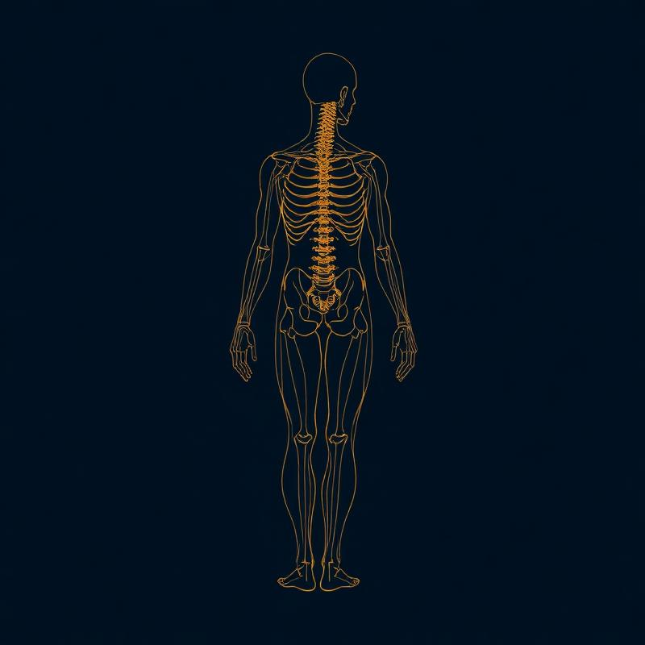

Det er en helhedsorienteret og manuel behandlingsform, der praktiseres af sundhedsprofessionelle fagpersoner.

Senetensbehandling er en helhedsorienteret og manual behandlingsform, der praktiseres af fagpersoner med en sundhedsprofessionel baggrund. Uddannelsen i denne behandlingsform giver viden og færdigheder specifikt til problemstillinger i bevægeapparatet.
Evidensen omkring senetensbehandling er erfaringsbaseret og tager afsæt i fysiologi og anatomi. Mange behandlere oplever, at læger, kiropraktorer, rygcentre og forsikringsselskaber anbefaler deres patienter senetensbehandling.
Erfaringen viser, at netop denne behandling er effektiv både med en lindrende og behandlende effekt. Behandlingsformen kan ydermere anvendes forebyggende og sundhedsfremmende.
Senetensbehandling er beskrevet som en proprioceptiv neuromuskulær facilitering, der påvirker kroppens proprioceptive sansning ved tryk på kroppens golgitendon sanselegemer – senetene. Denne stimulation i kombination med aktivitet af muskulaturen under modstand påvirker hele den myotatiske og antimyotatiske refleksmekanisme.
Kroppens proprioceptive sansning påvirkes konstant i forhold til, hvad det enkelte mennesker tilbyder kroppen af bevægelser, kropsholdning og arbejdsstillinger. Derfor er en naturlig del af behandlingsformen vejledning omkring hensigtsmæssige øvelser, statikkorrektion samt samtale om hverdagens ergonomi.
